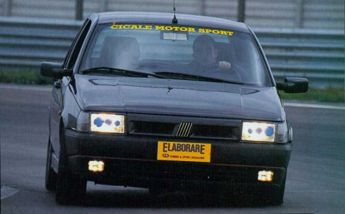
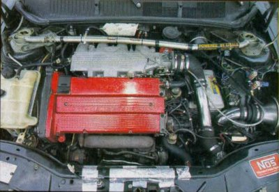
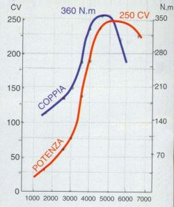
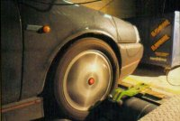
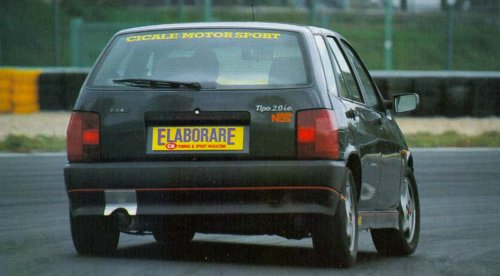
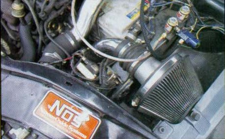

The substantial work carried out under the bonnet is in typical "Integrale" spirt. Well camouflaged under the skin of an average looking Fiat there is in fact a lion ready to show it's claws at every press of the accelerator
Until the apparition on the market of Bravo and Bava, more than a
million Fiat Tipos had been produced and that made them popular on all
our roads.

The Tipo derives from the Ritmo (FIAT Strada) from which it inherits the engine with a maximum size for petrol of 1600 cc. Only at a later stage were 1.8 and 2.0 litre twin cam versions made available. 16 valve versions were also produced which were definitely more appealing to sporty drivers. The engine with the greatest size was used in turbo charged form in other cars from the FIAT range. In particular the Lancia Delta Integrale 16v. Based on this prior experience it appears quite a good choice for Cicale Racing to create a turbo charged version of the Tipo 2.0 16V which features in this article.
|
 |
| Thanks to the extra input of the turbo this 4 cylinder 2 litre Fiat produces 250 bhp thus obtaining 125 bhp/litre. |
In order to guarantee a high margin of reliability, and above all in order to obtain a slight reduction in the compression ratio, they have replaced the original pistons with hand built forged items. The chroming of the connecting rods has also been carried out in order to reduce the inner friction. They modified the camshaft profiles to change the timing and have lightened and balanced the flywheel and crankshaft.
|
 |
| The considerable torque generated by the turbo allows the Cicale Tipo to get out of bends in a smooth and fast way. |
|
 |
| A moment from the rolling road test. The engine actually producing 250 bhp at 5300 rpm. |
On the track test...
We immediately enter in the inside of Tipo 2.0 16V observing the presence of the
Recaro seats from the Delta Integrale. The ignition key is turned and the Italian four
cylinders takes to life accompanied by a not so quiet symphony. We fasten our
seatbelts and we are therefore ready in order to leave from the pit lane of the Magione
circuit. We perform a warm up lap.

The response of the turbo is somewhat abrupt. Below 2500 rpm the Italian four cylinder engine does not like the low revs. The performance increases (particularly between 2500 rpm and 3500 rpm) and the power becomes more substantial. More than 36 Kgm transferred through the front wheels make the driving difficult. From 4400 rpm (which is the maximum torque) until and beyond 5500 (the maximum power) the rate the revs rise is so fast that you have to be careful not to hit the rev limiter. In second gear the kick of the output is not diminished at all. On the contrary, less wheel spin makes for better acceleration. There is only a very limited transfer of load from front to the rear of the car. The sound of the exhaust during acceleration is substantial due to it’s free flowing nature. Thus makes it more suitable for race use than on the public roads.
|
 |
| A detailed view of the NOS. In the main view is the direct inlet air filter. |
In conclusion the upgrade does not sound to be very effective. The rate at which the power is released is very abrupt, but the most demanding drivers will certainly appreciate this feature.
The total cost including all the parts listed below, VAT and labour is 12,000,000 Lira (or roughly £4000)
| Performace |
| Standard Tipo 16V |
|
Maximum Power 139 bhp at 6000 rpm Maximum Speed 205 Km/h |
| With Upgrade |
|
Maximum Power 250 bhp at 5300 rpm (330 bhp with 1.5 bar of NOS) Maximum Speed 263 Km/h (with standard gearing) |
| Upgrade Components |
|
Modified camshafts Special Pistons Chromed con rods lightened and balanced crankshaft Garrett T4 turbo Enhanced ignition Remap of ECU NOS system with control on steering wheel Aditional Lamda sensor Enhanced fuel pump JR air filter Home made exhaust system with special manifold Tar-Ox G88 front discs Ferodo Racing Pads front and rear Sparco springs Adjustable Koni shock absorbers Front and rear struct braces |